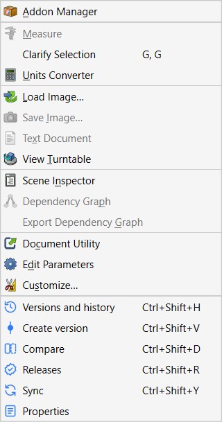

Keyboard shortcuts
Commands
These work in every workbench while FreeCAD’s main window has focus.
| Keys | Command | What it does |
|---|---|---|
Ctrl+Shift+H |
Versions and history |
Show or hide the panel. H for history. |
Ctrl+Shift+V |
Create version |
Name a snapshot of the whole project. V for version. |
Ctrl+Shift+D |
Compare |
Compare two points in time. D for diff. |
Ctrl+Shift+R |
Releases |
Open the release register. R for releases. |
Ctrl+Shift+Y |
Sync |
Share or sync with your team. sYnc. |
The same commands are at the bottom of the Tools menu, which shows the keys next to each entry.

In the panel
These work when the Versions and history panel has focus, for example after clicking an entry.
| Keys | What it does |
|---|---|
↑ ↓ |
Move through history entries. |
Enter |
View the selected entry as a read-only copy (same as double-click). |
Ctrl+F |
Open the history search and put the cursor in it. |
Esc |
In the search box: clear it, then close it. Elsewhere: close the details card, then the search. |
In dialogs
Enter |
The dialog’s blue button (Create version, Merge, Release, …). |
Esc |
Cancel. |
Tab |
Move to the next field. |
How the keys were chosen
Strata’s keys are all on Ctrl+Shift, where FreeCAD 1.1 itself only uses Ctrl+Shift+I, Ctrl+Shift+P, Ctrl+Shift+S and Ctrl+Shift+Tab. All 185 default shortcuts of a running FreeCAD 1.1.4 were checked, and Strata’s test suite verifies that each Strata key belongs to Strata alone.
Other add-ons may use the same keys. If two commands share a key, Qt runs neither, so change one of them as described below. An add-on that hosts Strata in its own interface can choose Strata’s keys itself. For example, an NX-style interface keeps Ctrl+Shift+D and Ctrl+Shift+Y for NX’s Drafting and Layout applications. In that case the Tools menu shows the keys that are actually in effect.
Change a shortcut
-
Open and the Keyboard tab.
-
Find the command, for example by typing Versions and history into the search field.
-
Click into Shortcut, press the new keys and click Assign.
FreeCAD remembers your choice; Strata never overrides it.
| The shortcuts become active once FreeCAD has built Strata’s menu entries, which Strata asks for as soon as it starts. If an add-on such as an alternative user interface hosts Strata (see Embedding), that add-on decides when this happens. |